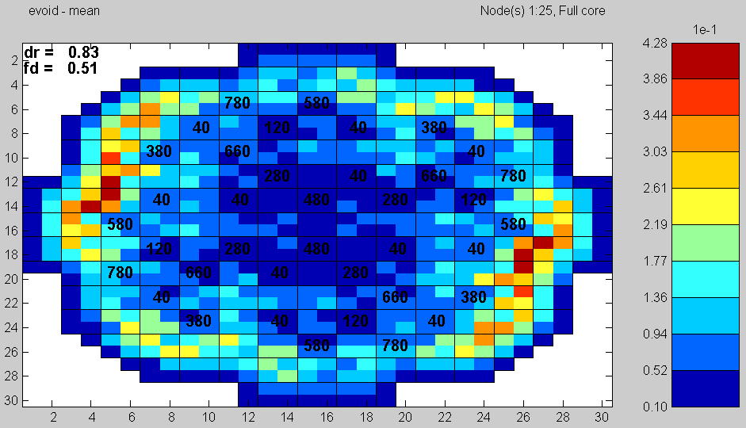

Contents
1 Run matstab on c13-2.inp include Harmonics
matstab ../c13-2.inp Harmonics 2
********************** MATSTAB 3 for Simulate-3 **********************
S3K input file: C:\training\MatlabClass\S3kMatstab\Matstab\c13-2.inp
Simulate restart file: C:\training\MatlabClass\S3kMatstab\Matstab\stab-2.res
Cycle Exposure: 6.58
Library file: C:\training\MatlabClass\S3kMatstab\Matstab\cd-file.lib
Power 63.8 % Flow 4535 kg/s
Input and initialisation: 1.2948 s
Power-Void Iteration:
It # Max(dPow) max(DdP) Keff
(kPa)
-----+----------+-----------+-----------+
1 0.36017 -3.11242 0.99791
2 0.15409 0.46999 0.99853
3 0.06235 -0.03147 0.99795
4 0.03094 0.05833 0.99711
5 0.01266 0.00782 0.99676
6 0.00631 0.01563 0.99666
7 0.00313 0.00723 0.99662
8 0.00162 0.00372 0.99661
9 0.00080 0.00120 0.99661
10 0.00040 0.00038 0.99661
Simulate keff: 1.00453
Steady state: 17.1133 s
System matrix: 1.4508 s
AESOPS Algorithm:
It.# dr freq. tol (dlam)
-------+--------+---------+--------------+
0 0.8357 0.5570 0.232032
1 0.8097 0.5108 0.156903
0.8998 0.5102 0.081274
0.8996 0.5163 0.042197
0.8489 0.5168 0.045365
0.8246 0.5133 0.035167
0.8292 0.5116 0.013587
0.8330 0.5120 0.004933
0.8285 0.5125 0.005333
0.8248 0.5125 0.003935
0.8234 0.5124 0.001544
2 0.8276 0.5123 0.003535
0.8286 0.5126 0.002084
0.8291 0.5126 0.000491
Global calculation: 23.6342 s
Harmonic Keff
1 2
0.99400 0.99397
Eigenvalue calculation for Harmonics no. 1:
It.# dr freq. tol
-------+--------+---------+-------------
0 0.7380 0.4808 0.00139827
0.8018 0.4919 0.000425553
0.7982 0.4951 0.000218601
1 0.7925 0.4958 0.000155741
0.7905 0.4958 0.000111863
2 0.7891 0.4959 9.28233e-005
Eigenvalue calculation for Harmonics no. 2:
It.# dr freq. tol
-------+--------+---------+-------------
0 0.7055 0.4800 0.00199308
0.6640 0.4776 0.00360685
0.4945 0.4525 0.00269083
1 0.5443 0.4474 0.0021901
0.7364 0.4556 0.00173295
0.8285 0.4765 0.00126829
2 0.7017 0.4827 0.00111085
0.6661 0.4730 0.00044093
0.7008 0.4728 0.000112256
3 0.7067 0.4738 2.43589e-005
4 0.7054 0.4740 1.48916e-005
Total CPU-time: 81.2141 s
Total Real time: 37.511 s
To display the results, try
cmsplot C:\training\MatlabClass\S3kMatstab\Matstab\c13-2.mat
cmsplot ../c13-2.mat

2 Select shallow control rods (a group of four) to insert and change the rod pattern
matstab ../c13-2-shallow.inp Harmonics 2
********************** MATSTAB 3 for Simulate-3 **********************
S3K input file: C:\training\MatlabClass\S3kMatstab\Matstab\c13-2-shallow.inp
Simulate restart file: C:\training\MatlabClass\S3kMatstab\Matstab\stab-2.res
Cycle Exposure: 6.58
Library file: C:\training\MatlabClass\S3kMatstab\Matstab\cd-file.lib
Power 63.8 % Flow 4535 kg/s
Input and initialisation: 1.326 s
Power-Void Iteration:
It # Max(dPow) max(DdP) Keff
(kPa)
-----+----------+-----------+-----------+
1 -0.34298 -3.11242 0.99748
2 0.06673 0.55127 0.99992
3 -0.23639 -0.10700 0.99743
4 -0.09024 0.05911 0.99687
5 -0.03421 0.01541 0.99683
6 -0.01863 0.02027 0.99683
7 -0.01268 0.00460 0.99682
8 -0.00454 0.00255 0.99680
9 -0.00185 0.00099 0.99678
10 -0.00049 0.00069 0.99678
11 -0.00055 0.00035 0.99678
Simulate keff: 1.00453
Steady state: 20.4361 s
System matrix: 1.326 s
AESOPS Algorithm:
It.# dr freq. tol (dlam)
-------+--------+---------+--------------+
0 0.8357 0.5570 0.268435
1 0.7109 0.5040 0.186695
0.7871 0.4997 0.083547
0.7977 0.5050 0.037328
0.7580 0.5061 0.039842
0.7338 0.5035 0.031797
0.7325 0.5020 0.011411
0.7335 0.5022 0.002083
0.7303 0.5027 0.004650
0.7272 0.5027 0.003490
0.7259 0.5027 0.001405
2 0.7315 0.5025 0.005278
0.7334 0.5028 0.002871
0.7341 0.5028 0.000567
0.7348 0.5027 0.000621
0.7349 0.5027 0.000420
Global calculation: 26.567 s
Harmonic Keff
1 2
0.99414 0.99413
Eigenvalue calculation for Harmonics no. 1:
It.# dr freq. tol
-------+--------+---------+-------------
0 0.6473 0.4709 0.000930255
0.6701 0.4767 0.000413185
0.6774 0.4779 0.000332001
1 0.6791 0.4786 0.000288425
0.6784 0.4789 0.000235345
0.6773 0.4791 0.000207439
2 0.6769 0.4791 0.000182077
0.6768 0.4791 0.000159467
0.6767 0.4792 0.000139882
3 0.6767 0.4792 0.000122596
0.6768 0.4792 0.000107327
4 0.6768 0.4792 9.39994e-005
Eigenvalue calculation for Harmonics no. 2:
It.# dr freq. tol
-------+--------+---------+-------------
0 0.5995 0.4633 0.00208653
0.5624 0.4677 0.00327105
0.4323 0.4460 0.002339
1 0.5498 0.4522 0.0012876
0.6618 0.4607 0.000700608
0.6286 0.4672 0.000331806
2 0.6081 0.4656 0.000133169
3 0.6104 0.4648 1.73715e-005
Total CPU-time: 104.6611 s
Total Real time: 53.594 s
To display the results, try
cmsplot C:\training\MatlabClass\S3kMatstab\Matstab\c13-2-shallow.mat
3 Split the group in 2 and try with the NW-SE pair and the NE-SW pair
matstab ../c13-2-shallow-half.inp Harmonics 2
********************** MATSTAB 3 for Simulate-3 **********************
S3K input file: C:\training\MatlabClass\S3kMatstab\Matstab\c13-2-shallow-half.inp
Simulate restart file: C:\training\MatlabClass\S3kMatstab\Matstab\stab-2.res
Cycle Exposure: 6.58
Library file: C:\training\MatlabClass\S3kMatstab\Matstab\cd-file.lib
Power 63.8 % Flow 4535 kg/s
Input and initialisation: 1.3104 s
Power-Void Iteration:
It # Max(dPow) max(DdP) Keff
(kPa)
-----+----------+-----------+-----------+
1 -0.32627 -3.11242 0.99762
2 -0.33074 0.49537 0.99824
3 -0.19761 -0.05062 0.99788
4 -0.11257 0.06286 0.99712
5 -0.04144 0.00646 0.99682
6 0.00446 0.01367 0.99675
7 -0.00239 0.00704 0.99671
8 -0.00304 0.00368 0.99670
9 -0.00237 0.00132 0.99669
10 -0.00043 0.00046 0.99669
11 -0.00059 0.00013 0.99669
Simulate keff: 1.00453
Steady state: 16.9729 s
System matrix: 1.482 s
AESOPS Algorithm:
It.# dr freq. tol (dlam)
-------+--------+---------+--------------+
0 0.8357 0.5570 0.266263
1 0.7286 0.5045 0.183198
0.8119 0.5012 0.085677
0.8225 0.5069 0.040048
0.7840 0.5078 0.037170
0.7646 0.5052 0.027433
0.7670 0.5040 0.009025
0.7691 0.5044 0.003743
0.7664 0.5047 0.003753
0.7643 0.5047 0.002290
0.7639 0.5047 0.000564
2 0.7698 0.5045 0.005880
0.7720 0.5046 0.002678
0.7730 0.5046 0.000701
0.7734 0.5046 0.000565
0.7734 0.5046 0.000424
Global calculation: 24.1022 s
Harmonic Keff
1 2
0.99407 0.99405
Eigenvalue calculation for Harmonics no. 1:
It.# dr freq. tol
-------+--------+---------+-------------
0 0.6839 0.4727 0.000803292
0.6861 0.4782 0.000313101
0.6902 0.4789 0.000223055
1 0.6914 0.4795 0.000202554
0.6904 0.4797 0.000185789
0.6891 0.4798 0.000182051
2 0.6886 0.4798 0.000175447
0.6884 0.4797 0.000168747
0.6883 0.4797 0.000162018
3 0.6882 0.4797 0.00015536
0.6882 0.4796 0.000149168
0.6882 0.4796 0.000142973
4 0.6883 0.4796 0.000137112
0.6883 0.4796 0.000131678
0.6883 0.4795 0.000126329
5 0.6883 0.4795 0.000121279
0.6883 0.4795 0.000116598
0.6882 0.4795 0.000111992
6 0.6882 0.4794 0.000107638
0.6882 0.4794 0.000103598
7 0.6882 0.4794 9.96171e-005
Eigenvalue calculation for Harmonics no. 2:
It.# dr freq. tol
-------+--------+---------+-------------
0 0.6099 0.4635 0.0015429
0.6222 0.4720 0.00344831
0.8520 0.4512 0.00269216
1 0.9528 0.4749 0.00269097
0.6720 0.4907 0.00176798
0.6653 0.4749 0.000374909
2 0.6926 0.4739 6.51373e-005
0.6987 0.4743 4.32935e-005
3 0.6967 0.4742 2.65152e-005
Total CPU-time: 119.7464 s
Total Real time: 64.939 s
To display the results, try
cmsplot C:\training\MatlabClass\S3kMatstab\Matstab\c13-2-shallow-half.mat